1 · The three spine-only exports
Real covers, natural PocketLibrary-ish widths, text style 2, ship ornament.

1.00 in spine · fits
SVG 54×612 · PNG 720×6480


0.75 in spine · clips +8px
SVG 36×612 · PNG 540×6480


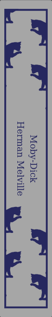
1.50 in spine · fits
SVG 90×612 · PNG 1080×6480


Correction to the earlier test. The earlier “cut-panel generator” verdict was based on the combined export and the front-cover input. It missed the dedicated #saveSpineSVG / #saveSpinePNG controls. Those are real, and the SVG is a clean spine rectangle. The spine is still not derived from the front cover and still needs a manually entered width.
2 · Exact dimensions and gutters
Default 0.25 in border gap, 0.05 in border thickness, 6×9 in cover.
| Spine | Outer px | SVG px | PNG 10× | Clean 10× |
|---|---|---|---|---|
| 0.400 | 28.8 | 10.8 × 612 | 288 × 6480 | 108 × 6120 |
| 0.677 | 48.7 | 30.7 × 612 | 487 × 6480 | 307 × 6120 |
| 1.000 | 72.0 | 54.0 × 612 | 720 × 6480 | 540 × 6120 |
| 1.500 | 108.0 | 90.0 × 612 | 1080 × 6480 | 900 × 6120 |
| 2.000 | 144.0 | 126.0 × 612 | 1440 × 6480 | 1260 × 6120 |
Outer = inches × 72. SVG width = outer − 18 px; height = 648 − 36 = 612. PNG = SVG × 10 plus 90 px transparent on each side and 180 px top/bottom. “Clean 10×” is a re-render of the SVG at 10× with the gutters removed.
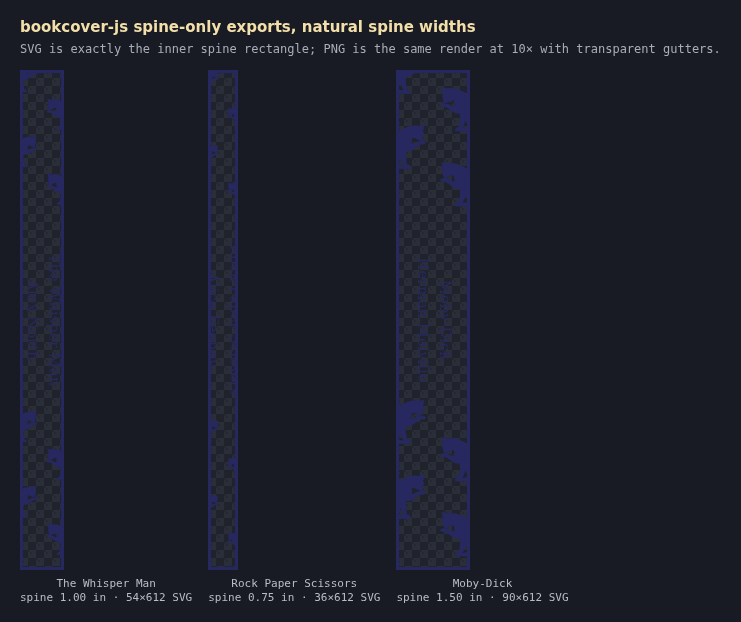
PNG was checked at the pixel level: (0,0), the gutter edge at (89,180) and the bottom gutter all have alpha 0; content starts at (91,181). So the PNG is not a clean spine rectangle unless you crop 90/180 px. The SVG has no margins at all.
3 · Real raster covers
What happens when the input is a JPEG, not line art.
readAsText() and the parser returns a parsererror node. The app throws child.getBBox is not a function; the spine stays on the previous/default design. not accepted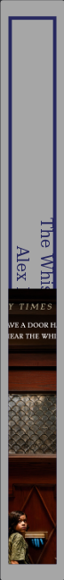
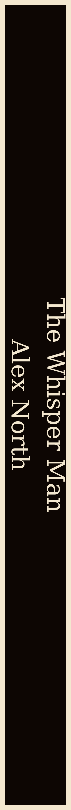
#0d0603; the exported SVG is transparent, so this render puts the colour behind cream ink. It is a legitimate typographic spine, but no cover pixels. works as fallback4 · A minimal patch makes raster spines work
Direct JPEG upload, full-bleed cover-edge crop, contrast scrim, no PNG gutters.
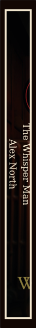
direct JPEG → full-bleed crop
SVG 54×612 · PNG 540×6120


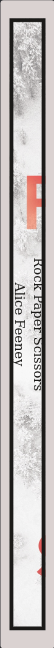
direct JPEG → full-bleed crop
SVG 36×612 · PNG 360×6120


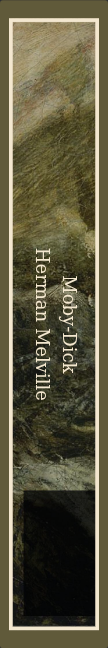
direct JPEG → full-bleed crop
SVG 90×612 · PNG 900×6120


index.html
- <input type="file" id="fileInput" accept=".svg" />
+ <input type="file" id="fileInput" accept=".svg,.jpg,.jpeg,.png,.webp" />
js/main.js
+ if (/\.(jpe?g|png|webp)$/i.test(file.name)) {
+ reader.onload = () => {
+ Cover.spine.background = reader.result; // data: URL
+ Cover.spine.artStyle = 0;
+ Cover.generateCovers();
+ };
+ reader.readAsDataURL(file);
+ return;
+ }
js/penguinstyle.js
+ // in genSpine(), before the border/type group:
+ <image href="{spine.background}" x="0" y="0"
+ width="{innerWidth}" height="{innerHeight}"
+ preserveAspectRatio="xMinYMid slice"/>
+ <rect fill="{spine.scrim}" width="{innerWidth}" height="{innerHeight}"/>
- saveSpine(filename) { this.save(filename, this.spine.svgElem, this.borderGap / 2, this.borderGap); }
+ saveSpine(filename) { this.save(filename, this.spine.svgElem, 0, 0); } // no PNG gutters
This patch is in harness/patched-bookcover-js/. It is a harness copy only; upstream is untouched. The exported SVG embeds the JPEG as a data URI and the PNG is exactly spine inner width × 6120 (540×6120, 360×6120, 900×6120). It proves the limitation is fixable, not that bookcover-js already does it.
5 · Title fitting: where it clips
18 px font, art off, measured glyph bounds against the saved SVG rectangle.
| Book | Style 1 stacked | Style 2 rotated | Style 3 title rot. | Style 4 author top | Style 5 preserve |
|---|---|---|---|---|---|
| The Whisper Man 1.00 in natural | 1.30 in | 0.96 in | 0.58 in | never in 0.26–2.50 | 2.50 in |
| Rock Paper Scissors 0.75 in natural | 1.28 in | 0.96 in | 0.58 in | 0.58 in | no fit ≤ 2.50 |
| Moby-Dick 1.50 in natural | 1.62 in | 0.96 in | 0.58 in | 0.58 in | 2.36 in |
Values are the first tested width with no glyph overflow, refined by binary search. Style 2 needs ~0.96 in for any title — the limit is font height across the spine, not string length. Style 1 depends on the longest word (1.28–1.62 in). Style 4 computes the author font from a width-dependent formula; for a short name such as “Alex North” it clips at every width from 0.26 to 2.50 in, because the author grows with the spine.
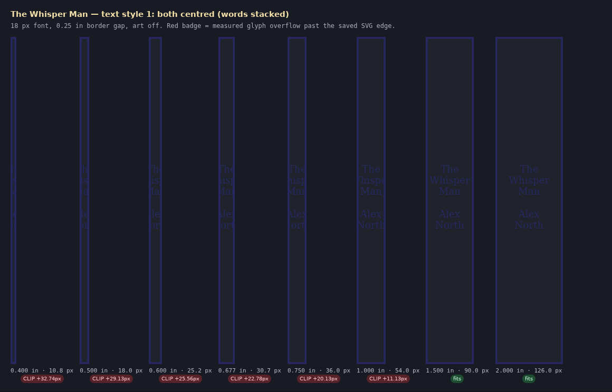
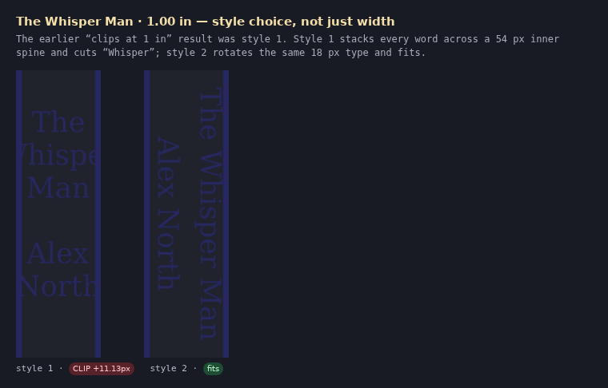
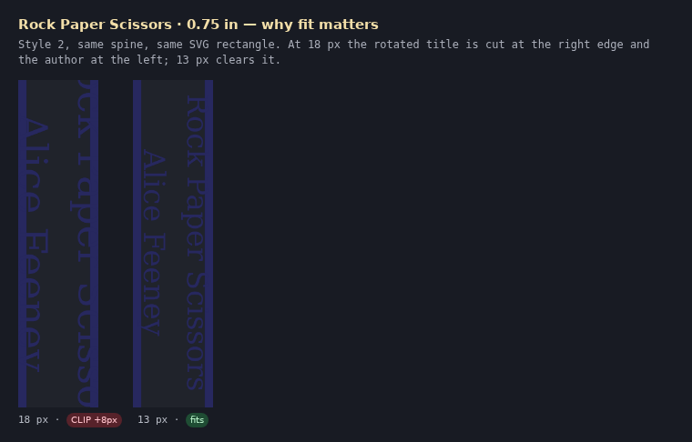
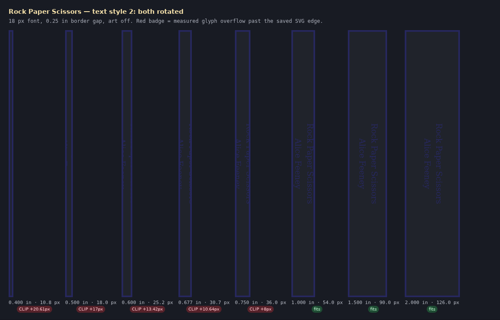
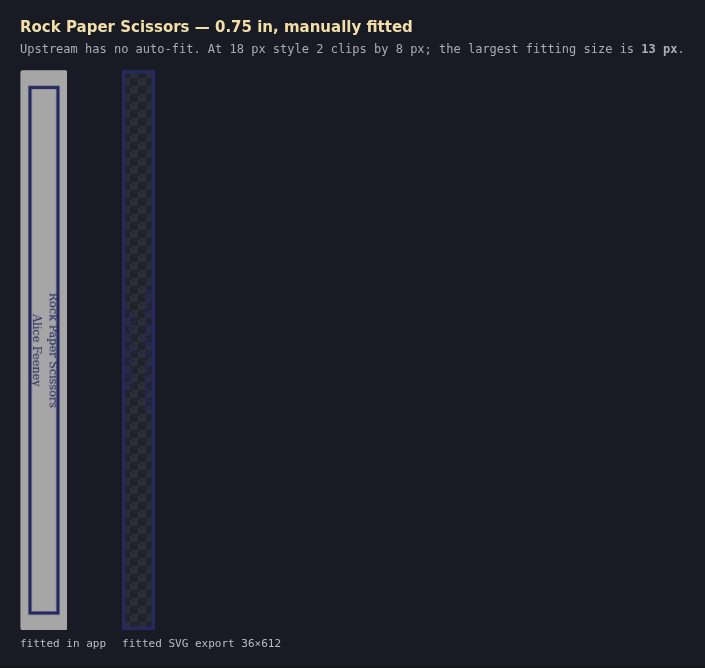
6 · Compared with the wrap engine and textless art
Same displayed height, not the same native resolution.
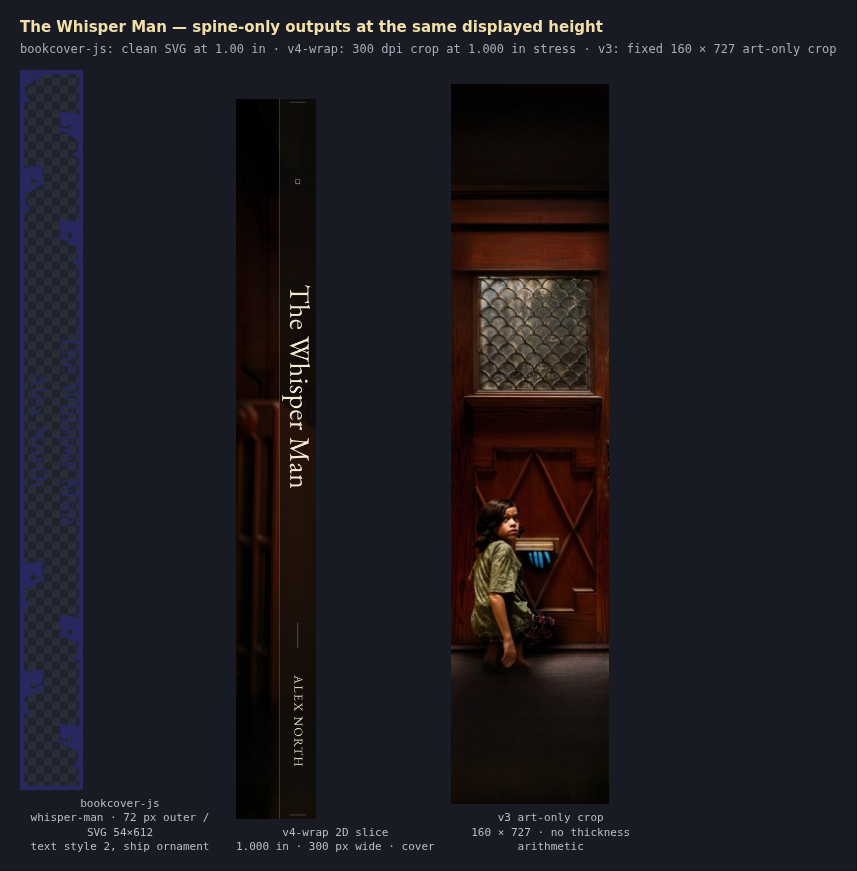
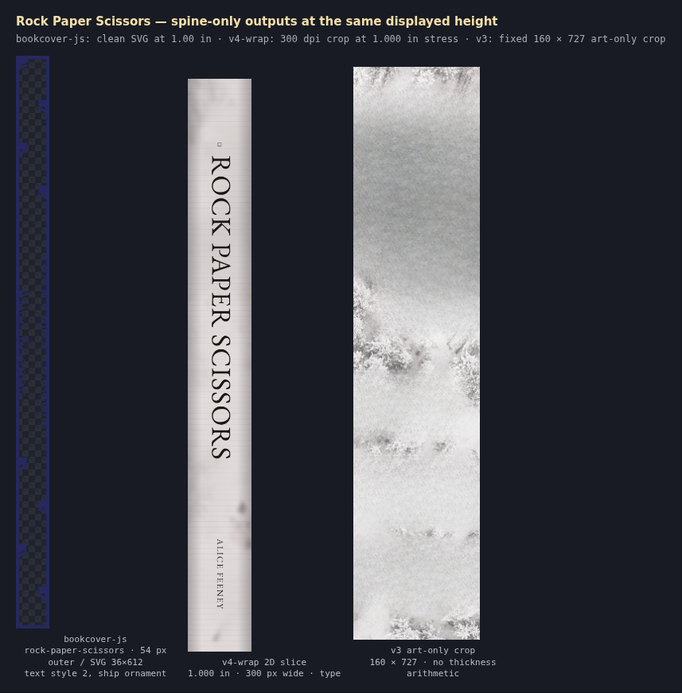
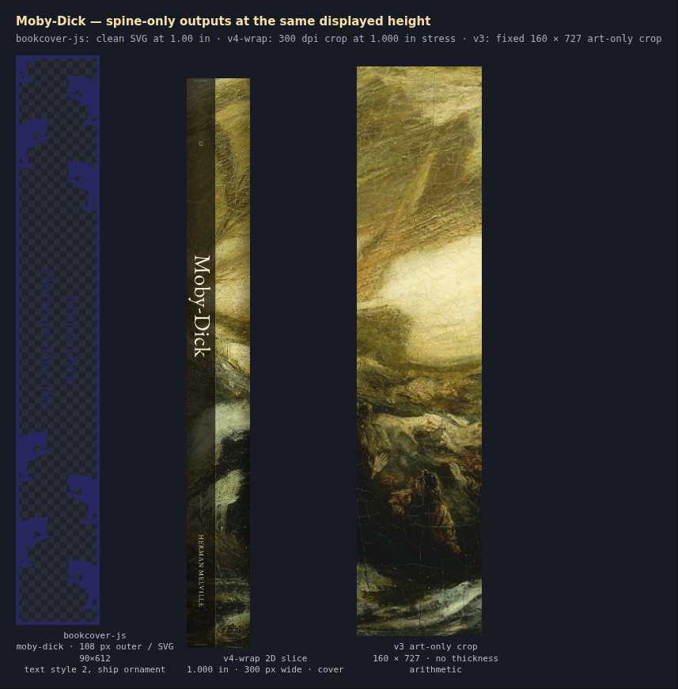
The wrap engine solves the things bookcover-js does not: page-count → spine arithmetic (0.677 in for 320 pages), a continuous no-gap wrap, measured auto-fit (17.3 pt at the computed spine, 25.5 pt at the 1.00 in stress), and real cover pixels. Textless art is the best-looking art but has a fixed 160×727 crop and no thickness model. bookcover-js is the only one of the three with a standalone decorative spine export; it is not a substitute for either.
7 · Verdict
Good enough for what, exactly?
Good enough as a 2D spine generator
Yes, for a standalone typographic/ornament spine. The SVG is crisp, editable, correctly sized at 72 dpi, and contains only the spine. It drops into a shelf as an <img> or inline SVG. At 1.00 in with rotated type it looks deliberate and reads well. The ship ornament is a Penguin-clothbound signature, which suits classics.
Not good enough as-is for PocketLibrary
No cover-derived art (raster fails or becomes a tile), no page-count → width, no auto-fit (0.75 in RPS clips at 18 px), and PNG exports carry transparent gutters. Style 1 clips at every normal 1 in spine; style 4's author formula misbehaves on thick spines. The SVG also has no background, so the shelf must supply it.
What exactly needs patching
- Raster input — accept JPEG/PNG and store a data URL on
spine.background; do not route it through the SVG line-art parser. - Full-bleed placement — insert an
<image preserveAspectRatio="xMinYMid slice">behind the border/type, plus a contrast scrim. Do not use the tiling path. - Type fit — measure the across-spine extent and reduce font size until it fits (13 px at 0.75 in, 11.3 px at 0.677 in for style 2).
- PNG gutters — call
saveSpinewith zero padding if the shelf expects an exact rectangle; keep the padded version only for cutting-plotters. - Optional — a background parameter so the SVG/PNG can carry the bookcloth colour, and a page-count/caliper input to replace manual spine width.
Bottom line: bookcover-js is a usable spine renderer, not a cover pipeline. With the five patches above it can produce a good-looking 2D shelf spine; without them, use it only for typographic/ornament spines and keep the wrap engine for cover-derived wraps.
8 · Files and commands
Everything is under .scratch/spine-cover-art-prototype/bookcover-js-deep/harness/.
Commands
cd .scratch/spine-cover-art-prototype/bookcover-js-deep/harness # upstream clone (MPL-2.0, commit 7a99ad9, 2024-08-14) git clone --depth 1 https://github.com/acestronautical/bookcover-js.git vendor/bookcover-js # serve the repo root; the existing static host is on :4173 # (from the repo root, an equivalent is: python3 -m http.server 4173) node capture-deep.cjs # exports, raster tests, fit sweep, wrap/textless compares node rebuild-contact.cjs # readable per-book fit sheets + clip close-ups node fix-v4.cjs # re-capture the wrap at each book's 320-page width node build-gallery.cjs # this page